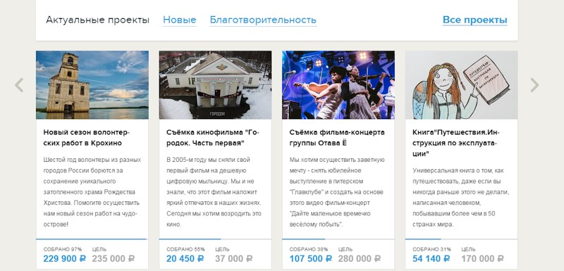
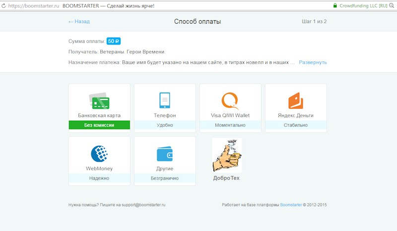

Техническое задание
Проект «ДоброТех»
(с учетом результатов проектного форсайта)
Суть проекта:
Создание сайта и мобильного приложения «Персональный спонсорский кошелек», с которого можно производить оплату проектов на сайте «ДоброТех» и других проектов всех известных российских краудфандинговых площадок.
Варианты названий кошелька:
Казначей
MoneyLike
FinBacker - financial backer
MoneyFunder
BestFunder
FirstFunder
MyMoneyDo
StartMoney
LikeCoin
BonusLike
GoodCoin
GoodMoney
SocMoney - social money
Умножитель
Единица измерения:
Курс 1 единицы = 1 российский рубль.
Варианты изображения знака (при оплате (голосовании) за проект)
Регистрация в системе происходит двумя способами:
1. Путем использования аккаунтов в социальных сетях (Facebook, Вконтакте).
2. Путем внесения регистрационных данных на сайте «ДоброТех».
Открытие кошелька происходит путем перевода номера сотового телефона в клуб (сообщество) спонсоров «ДоброТех» (оператор «Билайн»). Тут необходимо провести инвентаризацию технологии перехода.
Пополнения кошелька происходит за счет отчисления из клуба спонсоров «ДоброТех» на счет члена клуба в размере 10% от суммы оплаты члена клуба за сотовую связь.
Ликвидность кошелька обеспечивается возможностью оплаты (финансирования) краудфандинговых проектов по направлениям:
1. Общественные (социальные) проекты.
2. Благотворительные проекты.
3. Творческие проекты.
4. Покупка продуктов будущего.
5. Нано-инвестирование в проекты.
** Первые три: общественно-социальные, благотворительные и творческие - без долей. Финансирование изобретений и продуктов будущего и нано-инвестиции в технологии будущего - чистый инвестинг.
Интеграция с краудфандинговыми площадками необходимо провести на трех уровнях:
1. Автоматическая регистрация пользователей сайта «ДоброТех» на сайтах партнеров, путем перелинковки и передачи данных пользователя на сервер партнеров.
2. Размещение на сайте «ДоброТех» слайдеров с проектами краудфандинговых площадок.
3. Интеграция кошелька на сайты краудфандинговых площадок.
Boomstarter.ru
Planeta.ru
И др.


MVP - minimal viable product
С целью минимизации рисков, в процессе разработки проекта необходимо испытание неподтвержденных гипотез путем подготовки MVP - minimal viable product – минимально работающий продукт. Это позволит оптимально скорректировать проект уже в процессе разработки и избавит его от неэффективных неработающих гипотез и, соответственно, затрат.
Гипотезы, требующие проверки
1. Бесплатная регистрация. Требуется перевод номера сотового телефона в клуб спонсоров «ДоброТех». Ценность (Value) для члена - получения кошелька, пополняемого в размере 10% от фактической суммы оплаты за сотовый трафик от клуба спонсоров «ДоброТех».
2. Платная регистрация – 50 (300) рублей. Требуется перевод номера сотового телефона в клуб спонсоров «ДоброТех». Ценность (Value) для члена - получения кошелька, пополняемого в размере 10% от фактической суммы оплаты за сотовый трафик от клуба спонсоров «ДоброТех». Может использоваться для реферального вознаграждения: «Пригласи друга, получи 50 (300) рублей на свой счет» и др.
3. Степень ликвидности направлений:
- Общественные (социальные) проекты.
- Благотворительные проекты.
- Творческие проекты.
- Покупка продуктов будущего.
- Нано-инвестирование в проекты.
Стоимость проверки гипотез отсутствует, так как мы используем существующие бесплатные сервисы и собственные нефинансовые ресурсы.
Гипотезы необходимо проверить через:
1. Создание лэндинг-пейджа (www.ru.wix.com).
2. Проведение опросов через «свои» аккаунты в социальных сетях или с использованием сервисов (www.quora.com).
Этапы проведения mvp
Наименование этапа - Срок - Ресурс
1. Создание дизайна логотипа и стиля (цвета, шрифты) - 1 неделя - КСО, Рустам
2. Проверка mvp: проведение опросов, лендинг-пейдж - 2 недели - Рустам
3. Анализ mvp и его корректировка - 3 дня - Рустам
4. Создание технического задания и определение бюджета проекта - 1 неделя - КСО, Рустам
Дорожная карта запуска и реализации проекта
- Проведение mvp и его анализ
- Создание технического задания сервиса
- Создание сервиса
- Проведение переговоров с партнерами
- Интеграция с партнерскими сервисами
- Тестирование сервиса и доработка
- Реализация проекта
Целевые показатели роста членов клуба спонсоров «ДоброТех»
Период (4 недели) - Количество членов клуба нарастающим итогом, чел
1 - 0
2 - 377
3 - 610
4 - 987
5 - 1597
6 - 2584
7 - 4181
8 - 6765
9 - 10946
В качестве каналов продвижения необходимо использовать доступные и эффективные ресурсы:
1. Социальные сети.
2. Инфраструктура КСО (???).
3. Общественные организации и объединения.
В целях более эффективного продвижения необходимо разработать реферальную программу для продвижения проекта в социальных сетях и партнерскую программу, в том числе ранее разработанную логику группсчетов для продвижения проекта в общественных организациях и объединениях.
В среднесрочном периоде дальнейшее развитие проекта возможно последующим направлениям:
1. Крауд-инвестирование в инновационные проекты. Сегодня отсутствует достаточная нормативная база, система экспертизы инновационности проектов и достаточной культуры инвестирования граждан.
2. Крауд-инвестирование в личности.
gbaharev.wix.com/exinn
gbaharev.wix.com/dobrotech
(copy 2015-05-31)